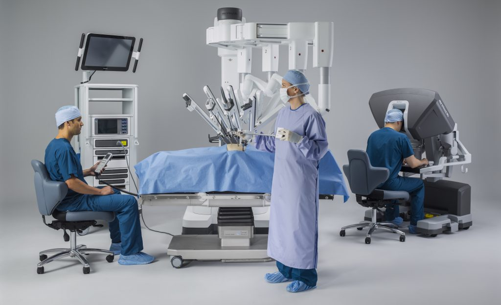
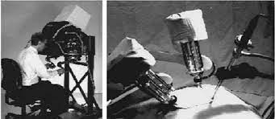

Medical
Health robotics enable a high level of patient care, efficient processes in clinical settings, and a safe environment for both patients and health workers. Some of the medical robots used are Surgical robots / robot-assisted surgery, Robotics for radiotherapy, Rehabilitation robots, Laboratory robots, Robotic prosthetics, Hospital robots, Social robots.
The first surgical robot, puma 560, was used in 1985 in a stereotaxic operation, in which computed tomography was used to guide the robot as it inserted a needle into the brain for biopsy, a procedure previously subject to error from hand tremors during needle placement.
Visit Webiste on Medical robots!